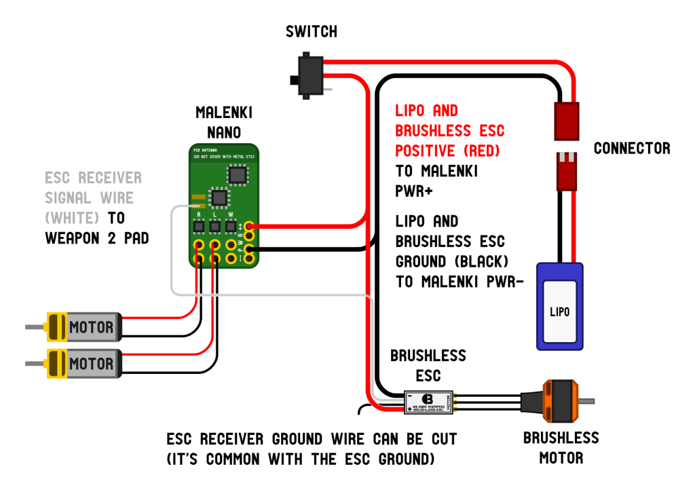

Antweight BattleBot


Quick Specifications
- Weight class: Antweight UK, Fairyweight US
- Weapon: Vertical spinner
- Drive: N20 brushed motors
- Battery: 450 mAh 2S LiPo
- Materials: PLA/TPU frame, steel spinner
Mechanical Design
The main structural piece of this bot is essentially a 95A TPU bucket. TPU is a flexible polymer which allows the bot to absorb some blows which would shatter PLA bots. PLA pieces are shown in white on the model currently. The tradeoff is that the flexibility makes TPU non-ideal for maintaing structure. Therefore, I get the best of both worlds from the design combination I am currently running. The rigid PLA top and weapon mount supports provide structral strength in areas which are are unlikely to take direct hits from other bots, while the flexible TPU walls absorb these hits. Mechanically, this robot is a 2 wheel drive vertical spinner design. This general category of design tends to do well in a mix of defense and offensive output, and I thought it would be a good introductory style.
Weapon
The weapon system of this bot is a 1/8th-inch-thick steel spinner driven by a Repeat Robotics 2004 direct drive motor. The spinner radius is 52mm, on the upper bound of what I could reasonably fit into the design. Vertical spinners do have some gyroscopic impact on driving and turning, but I really liked the damage vs. flinging versatility of vertical spinner designs. The motor is optioned at 2800KV, giving me nominally approximately 20,000 RPM. Under free-spinning conditions, which assume a weightless spinner, this would give approximately 160 mph tip speed of the weapon. This will obviously be lower in practice, but is a good upper bound to keep in mind. Below is a simulated FEA event of the spinner colliding with a PLA bottom plate at its maximum RPM. The motor shaft and screws are modeled as rigid bodies, while the PLA plate is fixed at boundaries with element deletion based on principal stress to simulate a "worst-case scenario."
| Machine | Haas Mini Mill |
|---|---|
| Tooling | 3/4 in Endmill, 1/4 in Twist Drill |
| Material | 4140 Chromoly |
| Operation | 3-axis Milling |
| Stress Representation | Von Mises |
|---|---|
| Initial Angular Velocity | 18,000 RPM |
| Analysis Type | Explicit Dynamic |
| Element Deletion Criteria | Principal Stress |
Drivetrain
The drivetrain consists of two N20 brushed motors at 600 rpm. These motors provide sufficient power to counteract the gyroscopic effects of the vertically spinning weapon. They are driving 1.5 in closed-cell foam wheels, which offer several competitive advantages. Enemy weapons tend to cleave straight through the foam, removing some material but leaving the wheel itself still functional. This is a distinct advantage over more solid plastic wheels, which tend to shatter or transfer force to the motor shaft upon impact. The radius of the wheel is such that they maintain contact when upside down, allowing some movement in an inverted position.
Electrical System

.jpeg)